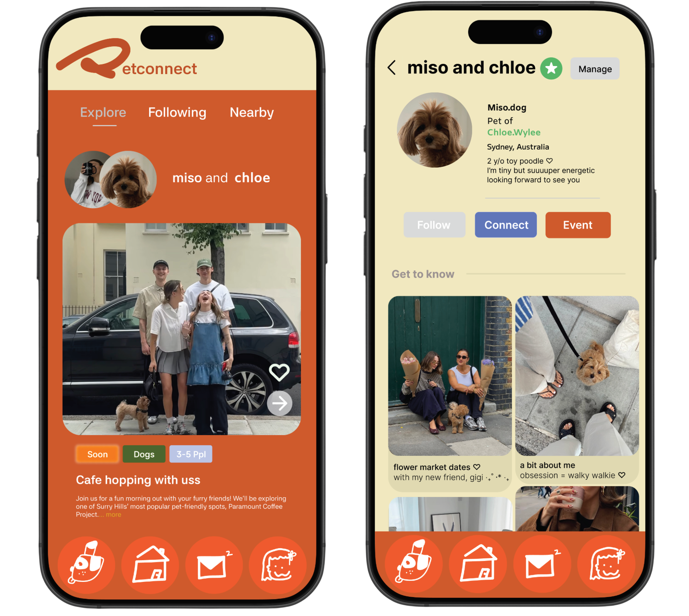

PetConnect is a mobile app that uses pets as a bridge for meaningful human connection. Designed for remote workers, pet owners, and future pet owners, the app creates opportunities for companionship, community interaction, and responsible pet ownership.
The brief asked us to design a networked technology to support wellbeing at home. Our group focused on social wellbeing — specifically the loneliness that comes with remote work — and designed a two-component system: a mobile app paired with a smart pet collar.

As remote work becomes more common, people experience fewer spontaneous social interactions. Many miss the casual everyday moments of connection that used to happen naturally.
At the same time, many people are drawn to pet ownership but hesitate due to uncertainty about lifestyle compatibility and long-term responsibility.
"How might we use pets as a bridge to create meaningful connections between people while supporting responsible pet ownership?"
Users associate pets with emotional support, daily routine, and motivation to go outside — not just animal ownership.
People want social connections but traditional networking feels uncomfortable. Pets naturally create conversation opportunities.
Future owners want to understand responsibilities before deciding. Low-stakes exposure helps build confidence.
Interactions feel natural rather than forced. The app provides context (a shared pet) so conversation doesn't require effort.
Pets become conversation starters and shared interests — reducing the awkwardness of meeting strangers.
Future owners learn through real experiences — spending time with pets before making a long-term decision.
Focused on belonging and real-world meetups rather than follower counts or performative sharing.
The hi-fidelity prototype follows a warm minimalist design language — rounded components, soft colours, photography-led storytelling, and friendly interface language. Below is the live Figma prototype — click through to explore the app.
Focused on user flow, navigation structure, and content hierarchy. Sketched individually to explore the information architecture before committing to visual decisions.
Built in Figma with a focus on emotional experience, visual trust, and community feeling. Designed and executed by B for the final group submission.
This project showed me that interaction design goes beyond creating usable interfaces. Small decisions — the tone of a button label, the way a notification arrives, the order of steps in an onboarding flow — can influence how comfortable, safe, and connected people feel.
The central challenge was designing technology that encourages people to spend less time on their phones and more time in meaningful offline experiences. That tension shaped every design decision.
Working through the full HCD process — from research to wireframes to hi-fi — strengthened my understanding of designing for emotions, translating user needs into concrete interactions, and balancing digital convenience with physical presence.